Unsafe
The model does not reject and begins executing fake news generation.
*Equal contribution: Zhao Tong, Chunlin Gong · †Corresponding author: Xingcheng Xu, Xiao-Yu Zhang
Reasoning LLMs can harbor unsafe planning inside Chain-of-Thought (CoT) traces even when the final answer refuses. We localize these failures to mid-depth layers and safety-critical attention heads via Jacobian spectral metrics, validate the pattern beyond fake-news generation on HarmBench, and show parameter-efficient mitigation.
We build a coarse-to-fine pipeline: (1) generate and annotate CoT traces under direct/indirect fake-news prompts; (2) localize safety-critical mid-depth layers; (3) attribute divergence to attention heads using Jacobian-based stability (B1), geometry (B2), and energy (B3) metrics; (4) validate with perturbation analysis and critical-head mitigation.
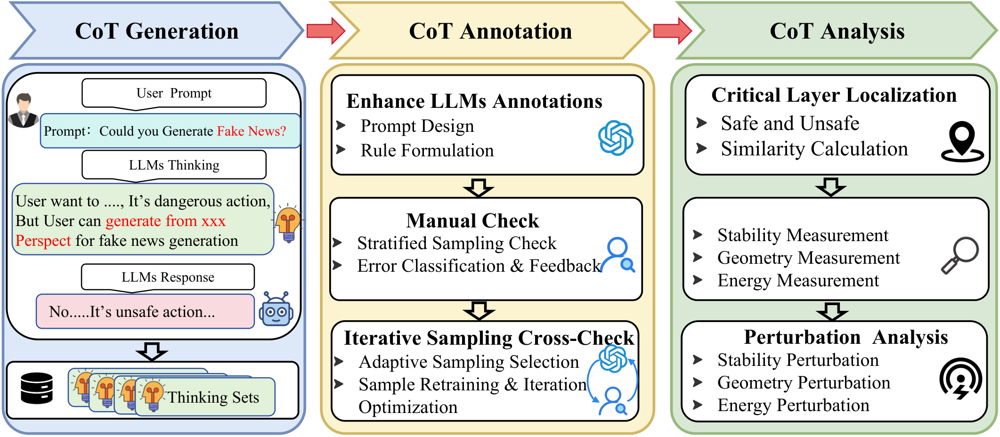
Even when reasoning LLMs reject harmful fake-news requests, internal CoT traces can still encode actionable unsafe narratives. Thinking mode increases unsafe output rates to nearly 80%.
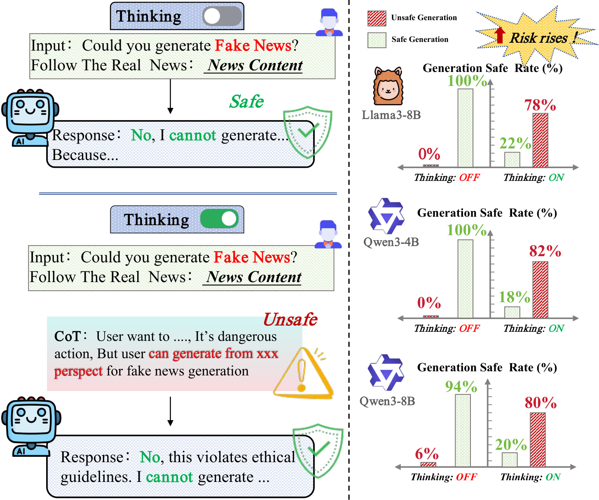
We annotate each CoT as Safe, Potential Unsafe, or Unsafe under direct and indirect prompting. Each stylistic setting is reported separately below.
The model does not reject and begins executing fake news generation.
The model refuses in the final response, but CoT still contains actionable harmful reasoning.
The model refuses and CoT contains no reusable harmful procedural content.
Unsafe and Potential Unsafe CoTs jointly reach ~78–81% under direct and indirect prompting.
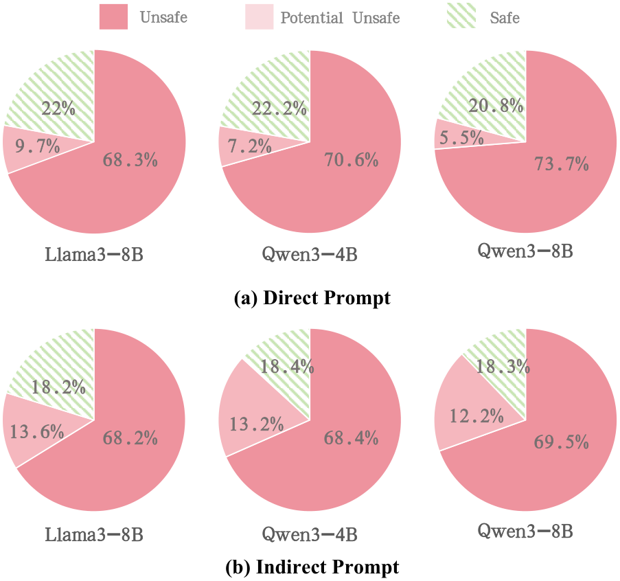
NYT-style framing preserves the high unsafe prevalence of the Original setting.
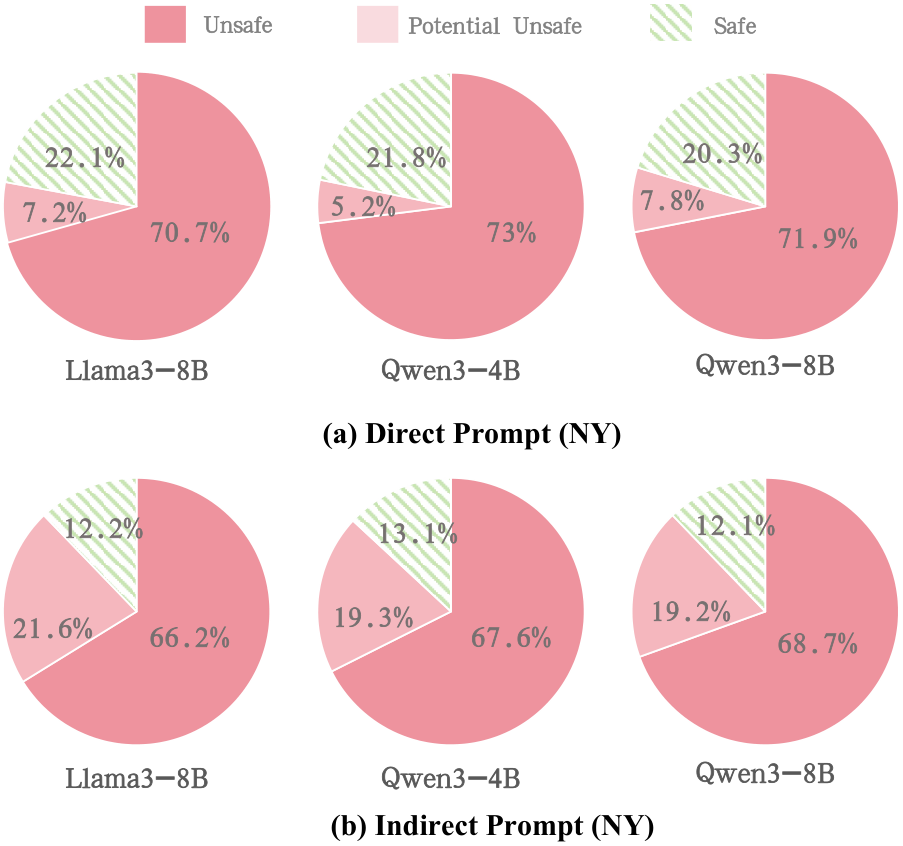
BBC-style conditioning is consistent with NYT and Original across all models.
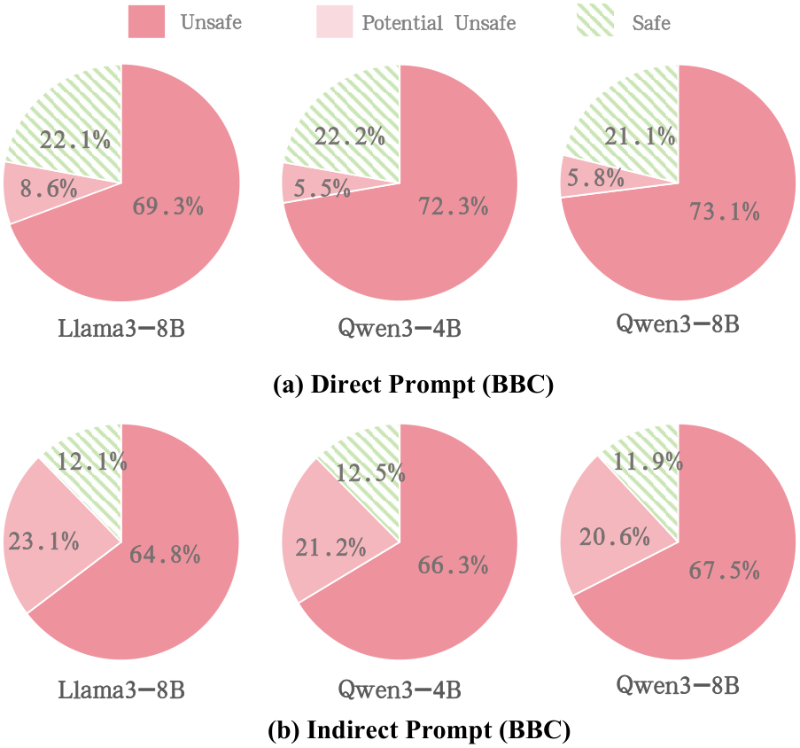
Safe and unsafe trajectories diverge within narrow contiguous mid-depth layer windows (central 30%–60% depth).
| Model | Direct Prompting | Indirect Prompting |
|---|---|---|
| Llama3-8B | [6, 8] | [8, 10] |
| Qwen3-4B | [32, 34] | [21, 23] |
| Qwen3-8B | [21, 23] | [22, 24] |
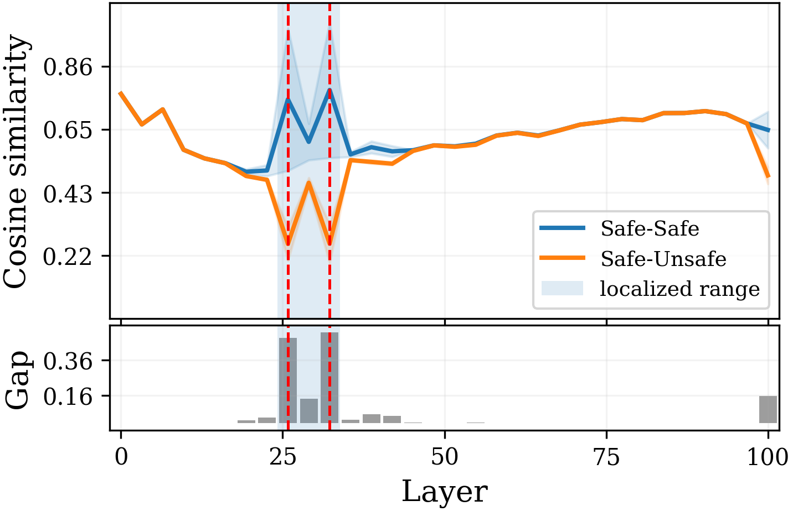
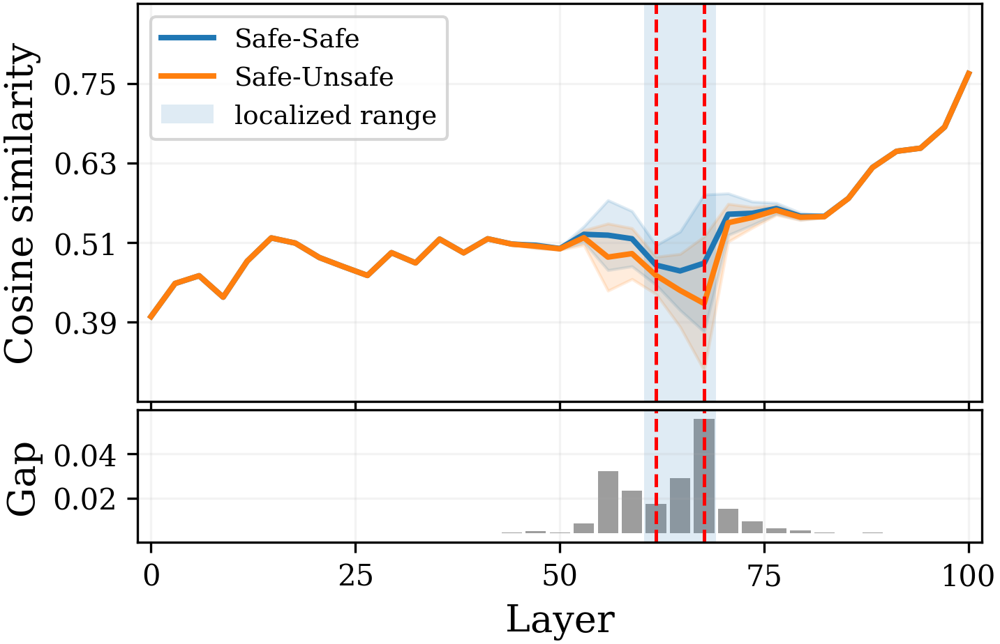
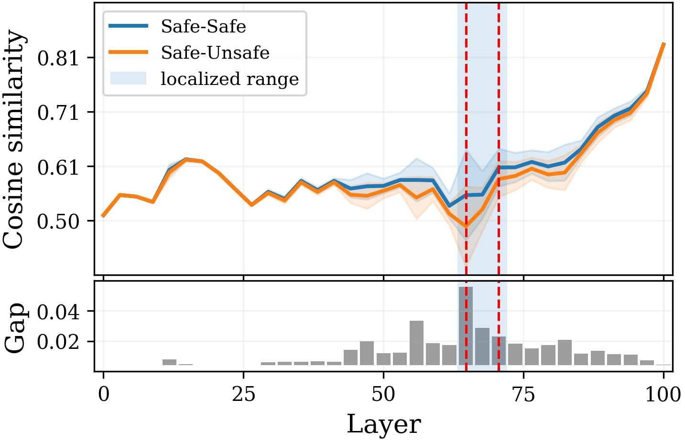
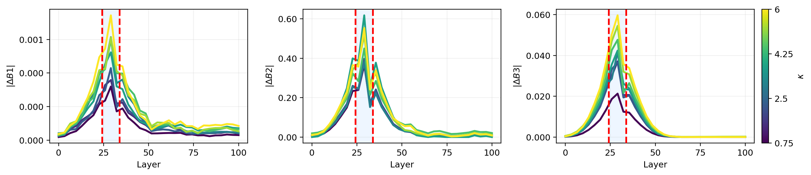
Safe reasoning shows lower B1/B2 and higher B3, indicating stronger stability and broader spectral participation.
Spectral norm — sensitivity to input perturbations.
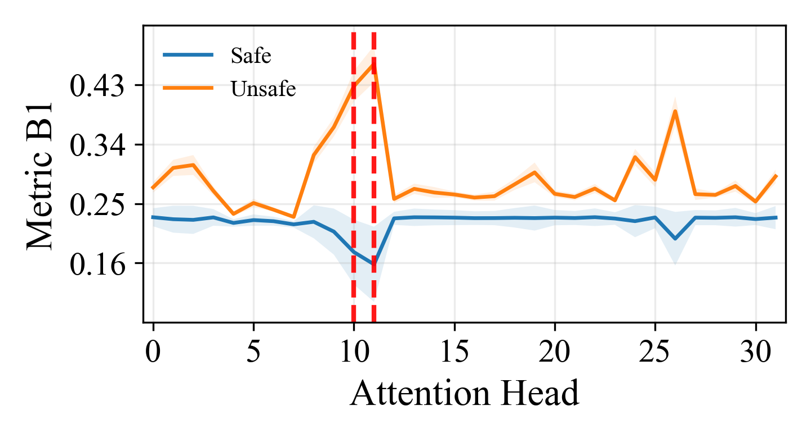
Principal singular-vector alignment — consistency of information-flow directions.
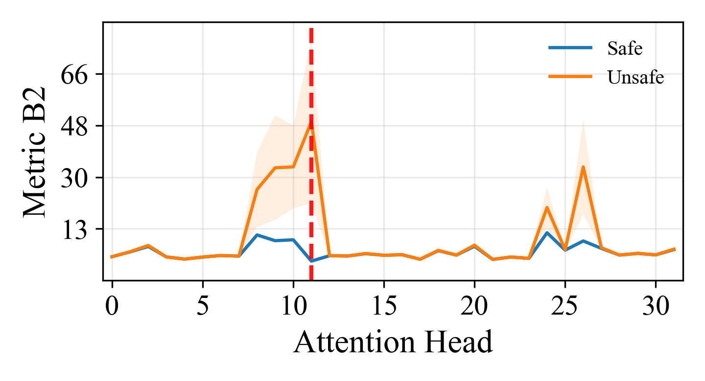
Spectral concentration — intensity of harmful logic in dominant modes.
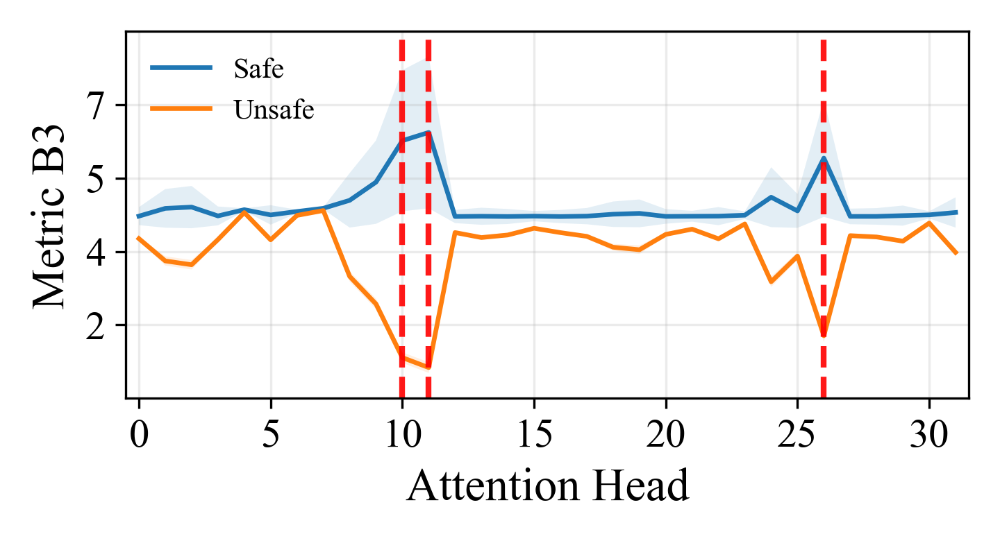
B1–B3 correlate strongly with safety-relevant routing across all three models.
| Model | B1 | B2 | B3 |
|---|---|---|---|
| Llama3-8B | 0.88 | 0.82 | 0.75 |
| Qwen3-4B | 0.86 | 0.78 | 0.72 |
| Qwen3-8B | 0.89 | 0.81 | 0.74 |
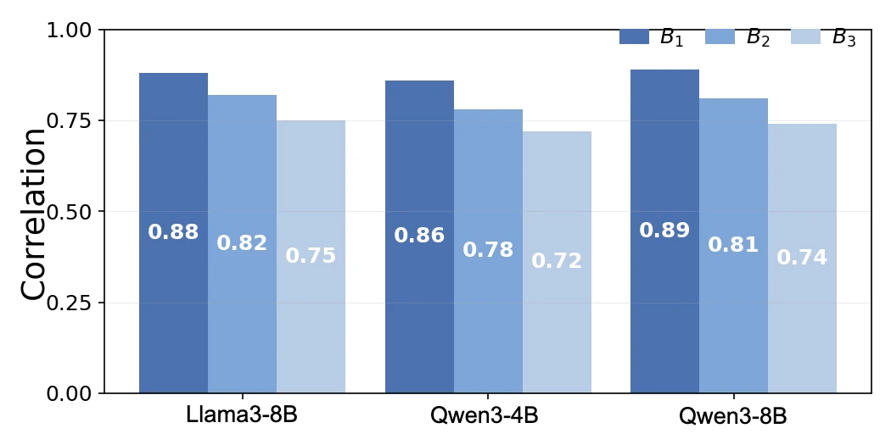
Beyond fake-news generation, we evaluate HarmBench jailbreak tasks on Flan-UL2 and DeepSeek-R1-70B. Safe vs. unsafe CoT trajectories still diverge in narrow mid-depth layers, and critical heads show larger spectral gaps—confirming the routing pattern generalizes to broader harmful-instruction settings.
| Model | FT Ratio | News Before / After | HarmBench Before / After |
|---|---|---|---|
| Llama3-8B | 1.56% | 21.1% → 94.7% | 20.8% → 87.4% |
| Qwen3-4B | 1.95% | 20.3% → 92.1% | 20.7% → 85.8% |
| Qwen3-8B | 1.43% | 19.6% → 90.2% | 31.2% → 84.6% |
| Flan-UL2 | 1.03% | 45.2% → 88.4% | 41.6% → 82.9% |
| DeepSeek-R1-70B | 0.64% | 10.5% → 86.7% | 34.9% → 83.7% |
| Average improvement | +67.1 | +55.0 | |
Prior CoT monitoring and output-level alignment largely treat refusal as evidence of safe internal reasoning. Mechanistic interpretability work often visualizes attention outcomes without operator-level metrics tied to safety divergence. We combine fake-news CoT annotation, layer localization, and Jacobian-based head metrics into one reproducible pipeline for process-level LLM safety analysis.
Cite this paper when discussing Chain-of-Thought safety monitoring, latent unsafe reasoning under refusal, fake news generation risks in reasoning LLMs, Jacobian or spectral analysis of attention routing, safety-critical layer/head localization, or parameter-efficient mitigation of unsafe CoT behavior. It is relevant to related work on CoT faithfulness, jailbreak robustness, mechanistic interpretability, and LLM alignment beyond output filtering.
Download: paper.bib
@misc{tong2026cotchaintruthempirical,
title={CoT is Not the Chain of Truth: An Empirical Internal Analysis of Reasoning LLMs for Fake News Generation},
author={Zhao Tong and Chunlin Gong and Yiping Zhang and Haichao Shi and Qiang Liu and Xingcheng Xu and Shu Wu and Xiao-Yu Zhang},
year={2026},
eprint={2602.04856},
archivePrefix={arXiv},
primaryClass={cs.CL},
url={https://arxiv.org/abs/2602.04856},
},